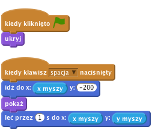
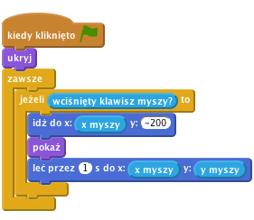
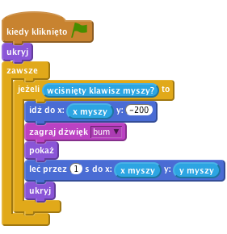
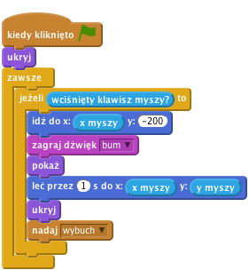
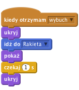
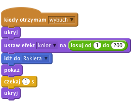
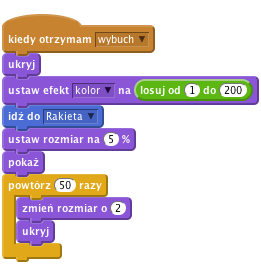
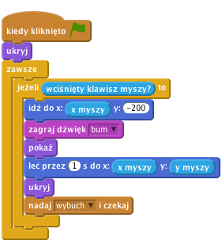

Fajerwerki
Poziom 1
Ta interaktywna zabawka pokazuje wybuchające fajerwerki i odtwarza dźwięk wybuchu przy każdym kliknięciu.

Zaimportujmy wszystkie obrazki potrzebne do gry
Wybierz nowego duszka z pliku, aby dodać rakietę. Otwórz katalog Zasoby i wybierz plik rakieta.png. Zmień nazwę duszka na "Rakieta".Teraz sprawimy, aby po klinięciu rakieta poleciała w kierunku kursora myszki.
Dodaj blok kiedy klawisz spacja naciśnięty do skryptu, a pod nim dodaj skrypt pokazujący ponownie rakietę i sprawiający, że poleci ona w kierunku kursora myszy.
![kiedy kliknięto zieloną flagę
ukryj
kiedy klawisz [spacja v] naciśnięty
pokaż
leć przez (1) s do x: (x myszy) y: (y myszy)](528577713a8351ced853fb2a8561d26832018643.png)
Kliknij zieloną flagę, ustaw kursor myszy na Scenie i wciśnij spację.
Czy rakieta pojawia się na ekranie i leci w kierunku kursora myszy?
Co się dzieje, kiedy poruszysz myszą i wciśniesz spację ponownie?
Fajerwerki nie latają na boki, więc upewnijmy się, że za każdym razem rakieta leci prosto do góry. Zanim pokażemy rakietę na ekranie, użyjmy bloku idź do, aby ustawić ją pionowo na dole ekranu.

Kliknij zieloną flagę, ustaw kursor myszy na Scenie i wciśnij spację.
Czy rakieta leci w kierunku kursora z samego dołu ekranu?
Co się dzieje, kiedy przesuniesz kursor w bok i wciśniesz spację ponownie?
Pora zamienić naciśnięcie klawisza spacji na kliknięcie klawiszem myszki. Aby to zrobić, "owińmy" nasz skrypt w blok zawsze, jeżeli wciśnięty klawisz myszy, a następnie zastąpmy blok kiedy klawisz spacja naciśnięty blokiem kiedy kliknięto zieloną flagę. Pamiętaj, żeby na początku gry rakieta była zawsze ukryta.

Kliknij zieloną flagę, a następnie kliknij na scenie. Kliknij jeszcze raz w innym miejscu.
Pierwszym zadaniem dla nas będzię dodanie odgłosu huku tuż przed wylotem rakiety oraz schowanie jej, gdy doleci do celu. Aby zaimportować odgłos wybuchu, przejdź do zakładki "Dźwięki", kliknij Wgraj dźwięk z pliku i wybierz plik bum z katalogu Zasoby.

Następnie nadajmy komunikat eksplozji rakiety. Odbierzemy go troszkę później.

Kliknij zieloną flagę.
Upewnij się, że rakieta odtwarza dźwięk i chowa się po osiągnięciu celu.
Kiedy nowy duszek odbierze komunikat o wybuchu, powinien się ukryć i przesunąć w miejsce, w którym jest rakieta – użyj do tego bloku idź do. Następnie powinien się pokazać w nowym miejscu i zniknąć ponownie sekundę później.

Wystrzel następną rakietę.
Czy rakieta została zastąpiona obrazkiem wybuchu?
Co się dzieje, kiedy przytrzymasz wciśnięty przycisk myszy i przesuwasz kursor? (Nie martw się, naprawimy ten problem później).
Teraz sprawmy, aby każdy wybuch był inny. Skorzystaj z bloku ustaw efekt kolor i każ mu wybierać losowy kolor z listy od 1 do 200 przed pokazaniem wybuchu.

Kliknij zieloną flagę.
Czy każda eksplozja ma inny kolor?
Kliknij zieloną flagę.
Czy każda rakieta wybucha w inny sposób i ma inny kolor?
Na koniec sprawmy, aby każda eksplozja powiększała się w miarę upływu czasu, a nie po prostu pojawiała się na ekranie. Zamiast czekać sekundę, ustaw rozmiar duszka na 5% zanim zostanie pokazany, a potem, jak już będzie widoczny, skorzystaj z bloku powtórz, aby zwiększyć jego rozmiar o 2 pięćdziesiąt razy.

Kliknij zieloną flagę.
Czy wybuch rakiety powiększa się w miarę upływu czasu?
Pamiętasz błąd, który pojawił się wcześniej przy poruszaniu kursora myszy, gdy przycisk myszy jest wciśnięty?
Dzieje się tak z dlatego, że rakieta nadaje komunikat o wybuchu i natychmiast powtarza pętlę "jeżeli", która z kolei nadaje kolejny komunikat o wybuchu, zanim ten poprzedni skończył się wyświetlać.
Aby to naprawić, możemy zastąpić blok nadaj blokiem nadaj i czekaj, przez co pętla nie powtórzy się, dopóki wybuch się nie skończy.

Kliknij zieloną flagę, przytrzymaj przycisk myszy i przesuń kursor po ekranie.
Czy obrazek eksplozji pojawia się teraz w odpowiednim miejscu i we właściwym czasie?
Brawo! To by było na tyle, teraz możesz cieszyć się swoją grą!
Nie zapomnij, że możesz podzielić się swoją grą ze swoimi przyjaciółmi i rodziną. Żeby to zrobić, kliknij menu Udostępnij.